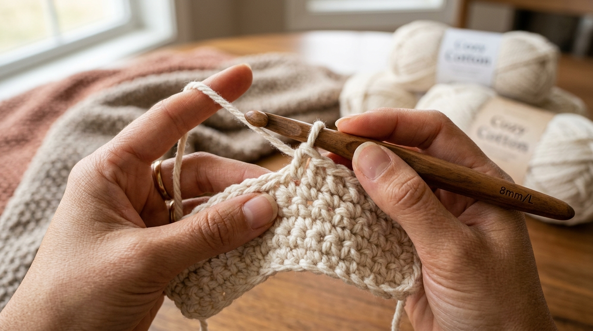
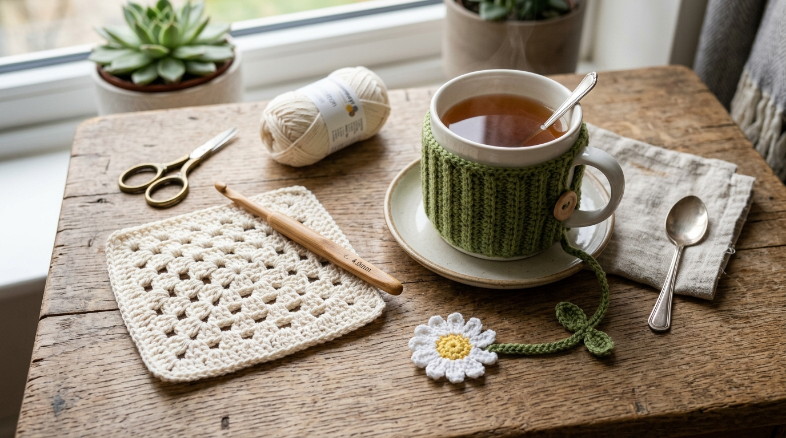

There is a quiet, meditative spell that comes over a room when yarn passes through your fingers. In an era dominated by hyper-fast screens and instant notifications, crochet offers an antidote: a tactile, physical craft where you build something beautiful row by row, stitch by stitch.
Unlike machine-knitted garments, **true crochet cannot be replicated by machines**. Every loop you make is uniquely human. Whether you are seeking a calming evening ritual, a way to make personalized gifts for loved ones, or simply want to create cozy items for your home, crochet is surprisingly easy to start—and infinitely rewarding.
"Crochet is not just about making things. It is about slowing down enough to watch time turn into texture."
1. Why Crochet is the Ultimate Slow Living Craft
Many people assume that crafting requires an elaborate workshop or expensive tools. Crochet requires none of that. A single hook, one ball of yarn, and a pair of scissors fit effortlessly inside your tote bag, ready for coffee shop mornings, weekend travel, or peaceful evening tea rituals.
Beyond its portability, neuroscientists and occupational therapists often highlight the mental health benefits of rhythmic yarn crafts. The repetitive motion of pulling yarn through loops triggers a state of flow, reducing anxiety and soothing a hyperactive mind.
2. The Starter Kit: Choosing Hooks, Yarn & Notions
Walking into a craft store can feel overwhelming with hundreds of yarn weights, fibers, and hook sizes. Keep it simple with this beginner starter formula:
The Golden Beginner Formula
Pair a 4.0 mm (G-6) or 5.0 mm (H-8) ergonomic hook with a Worsted Weight / DK Cotton or Acrylic Blend Yarn in a light, solid color (cream, soft sage, or honey yellow). Avoid dark black or fuzzy novelty yarns for your first project—light, smooth yarn makes stitch visibility 10x easier!
Essential Supplies Checklist:
- Ergonomic Crochet Hook (4mm - 5mm): Hooks with rubberized or wooden handles reduce hand fatigue significantly compared to thin metal hooks.
- 100% Cotton Yarn (DK / 8-Ply): Perfect for coasters, washcloths, and tote bags because it does not stretch out of shape and produces clean stitch definition.
- Tapestry Needle (Darning Needle): A blunt, wide-eye needle used for weaving in tail ends neatly when you finish your project.
- Stitch Markers: Small plastic locking clips that mark the start and end of rows so you never accidentally drop a stitch.

3. The 4 Foundation Stitches Every Beginner Must Know
Almost every intricate crochet pattern—from vintage blankets to cute amigurumi plushies—is built on just four fundamental movements. Master these four, and you can make almost anything:
The Slip Knot & Foundation Chain (ch)
The entry point to every straight row project. The slip knot secures yarn to your hook, and pulling loops through creates the starting chain necklace upon which all stitches rest.
Single Crochet (sc)
The densest, sturdiest stitch. Insert hook into chain loop, yarn over, pull through (2 loops on hook), yarn over, and pull through both loops. Ideal for coasters, beanies, and solid bags.
Half Double Crochet (hdc)
The perfect middle-ground stitch. Slightly taller than single crochet with a rich, ribbed texture on the reverse side. Wonderful for cozy scarves and tea cozies.
Double Crochet (dc)
A tall, airy stitch that works up twice as fast as single crochet. Double crochet is the foundation stitch for classic Granny Squares, bohemian shawls, and breezy summer tops.

4. 3 Easy First Projects You Can Finish in an Afternoon
Don't start with a giant queen-sized blanket—it takes months and can demotivate beginners! Start with small, quick projects that give you instant satisfaction within 1 to 2 hours:
1. Ribbed Tea Mug Cozy
A simple rectangle in Half Double Crochet with a wooden button closure. Keeps your tea warm while protecting your hands.
2. Daisy Flower Bookmark
Combine yellow and white yarn scraps to make a cute flower with a long chained stem—the perfect gift for book lovers.
3. Boho Square Coaster
A 4-inch square worked in Single Crochet with frayed fringe tassel ends. Adds instant warmth to your coffee table.
5. Pro Tips for Consistent Tension & Neat Edges
If your first rectangle looks triangular or wavy, don't panic! Almost every beginner struggles with dropping or adding stitches at the end of rows. Here are three simple habits that instantly fix it:
- Count your stitches at the end of every row: If you started with 20 chains, make sure every row has exactly 20 stitches.
- Use stitch markers in the first and last stitch: Put a marker into stitch #1 and stitch #20 as soon as you turn your work.
- Relax your hands: If your hook struggles to slide into loops, you are pulling the yarn too tight. Let the hook handle determine loop size!
Frequently Asked Questions
Written by Gurdeep Sidhu
Creator of Sidhu's Views. Passionate about slow living, handmade crafts, interior styling, and creative tech.